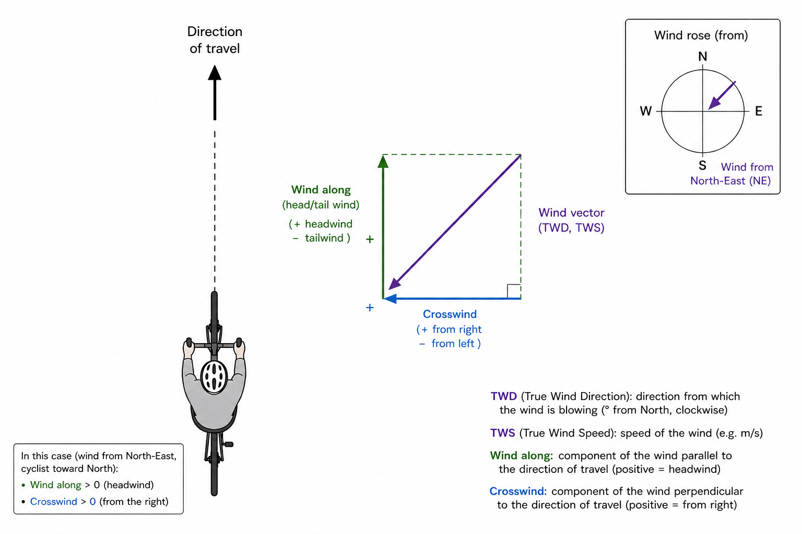
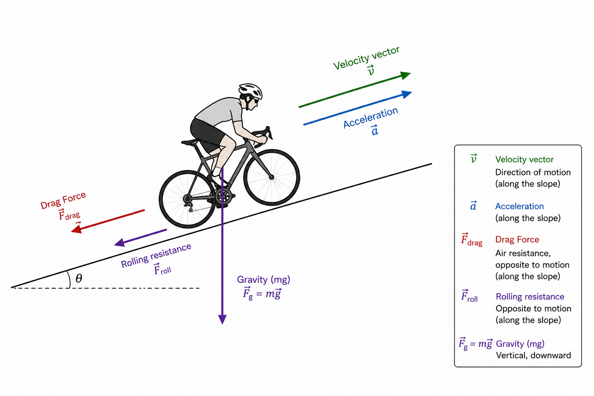
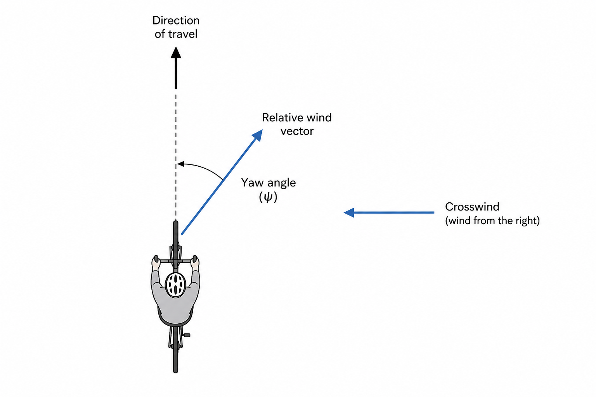

Appendix: Mathematics and Physics Used#
\( \)
Weather models#
U and V GRIB components#
Weather models provide the $u_{10}$ and $v_{10}$ wind components at 10 m on a grid (for example 0.25 degrees for GFS and IFS), at discrete time steps $step_i$ (typically 1 h or 3 h).
To estimate wind at a point $P$ and time $T$ between $step_i$ and $step_{i+1}$:
First, perform spatial interpolation. Find the 4 grid points surrounding $P$ and apply bilinear interpolation to compute $u_{10}$ and $v_{10}$ at $P$ for both $step_i$ and $step_{i+1}$.
Then, perform temporal interpolation between values at $step_i$ and $step_{i+1}$ to obtain $u_{10}(P, T)$ and $v_{10}(P, T)$.
Wind at 10 m#
The wind speed at 10 m is calculated as: $$ tws_{10} = \sqrt{u_{10}^2 + v_{10}^2} $$ The true wind direction is: $$ twd_{10} = \operatorname{atan2}(u_{10}, v_{10}) $$
Ground speed#
Wall effect#
The wind speed at 1.5 m (here called ground-level wind speed, $tws$) follows a wall-effect/log-law correction: $$ tws = tws_{10} \cdot \frac{\ln\left(\frac{1.5}{{rug}}\right)}{\ln\left(\frac{10}{rug}\right)} $$ where $rug$ is a roughness length determined by terrain type.
Roughness and terrain#
Terrain type is derived from the Global Wind Atlas v4 land-cover layer, based on the European Space Agency (ESA) WorldCover v200 dataset.
Floors, R. et al. (2025) Global Wind Atlas v4 (orography), 10.11583/DTU.28955282
Wind along the trajectory#
If wind is represented by $Tws$ (true wind speed) and $Twd$ (true wind direction):
$V_{windalong}$: wind component along the trajectory
$bearing$: cyclist heading
The projection formula is: $$ V_{windalong} = Tws \cdot \cos(Twd - bearing) $$

Relative speed#
The relative speed is given by: $$ V_{rel} = V_{bike} + V_{windalong} $$
Forces#

Drag Force#
$$ F_{drag} = \frac{1}{2} \rho C_d A V_{rel}^2 $$
$\rho$ is the air density,
$C_d$ is the drag coefficient, and $A$ is the effective frontal area. They are often combined into a single parameter, $C_dA$.
Rolling resistance#
$$ F_{roll} = C_{rr} m g $$ $C_{rr}$ is the rolling resistance coefficient.
Gravity#
$$ F_{gslope} = m g \sin(\theta) $$ $\theta$ is the slope angle.
Acceleration#
$$ F_a = m a $$
Power balance#
Power output required from the cyclist: $$ P_{cycliste} = (F_{drag} + F_{roll} + F_{gslope} + F_a) \cdot V_{bike} $$
Crosswind (yaw) and variation of CdA#

Crosswind changes the incidence angle (yaw, noted $\gamma$) of the rider-bike system, so $C_dA$ becomes yaw-dependent: $C_dA(\gamma)$.
A common approximation is: $$ CdA_{eff} = CdA \times \left(1 + 0.02 \times \frac{|\gamma|}{10}\right) $$